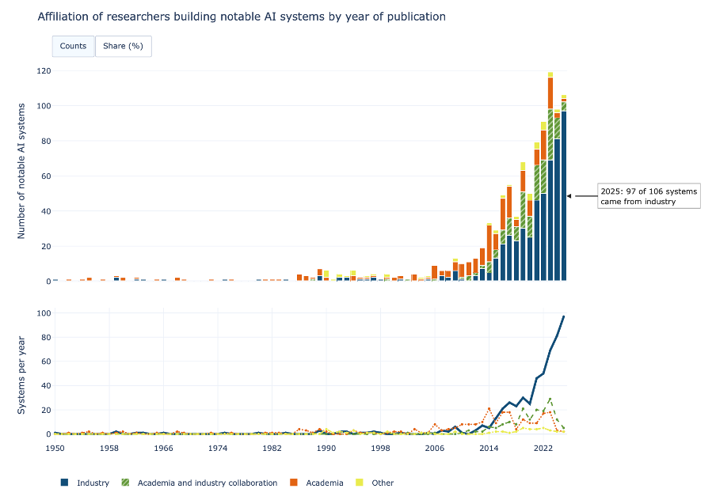
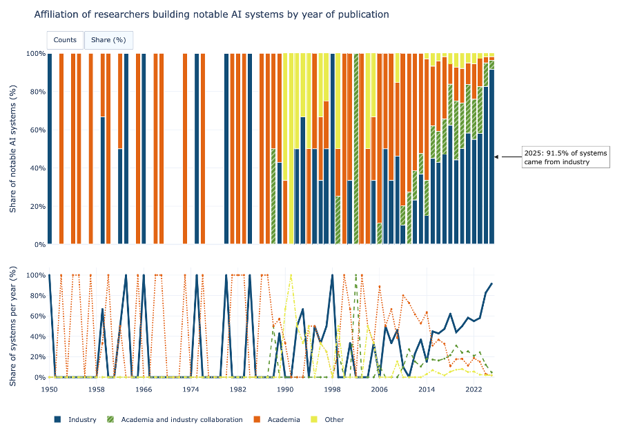
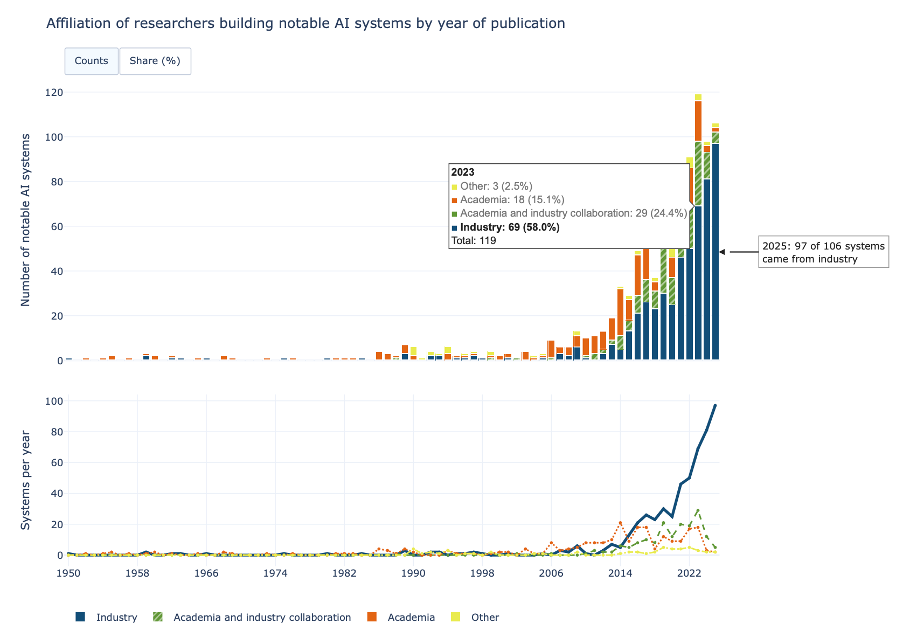
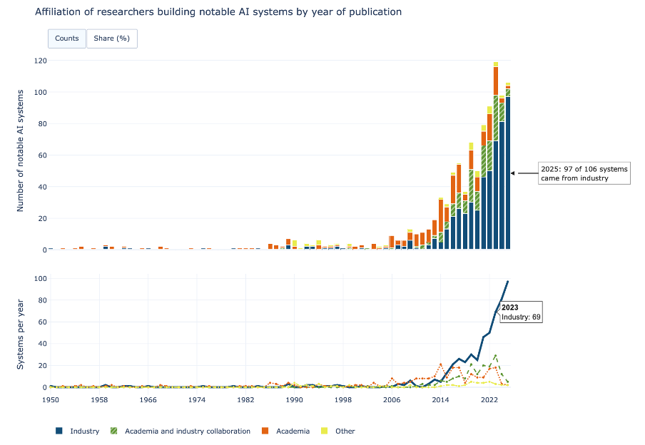
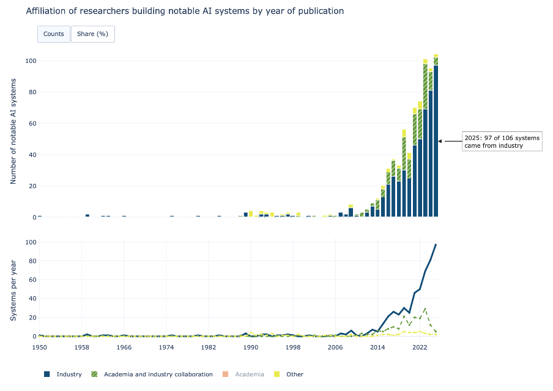

For Module 10 I combined two related views of the AI affiliation data into one multiplot. A stacked bar chart sits on top of a line chart, and both are linked by a Counts/Share (%) toggle and a shared legend. It is built in Plotly and hosted on Posit Connect Cloud.
The Visualisation
Design Choices
Juxtaposition. Both charts use the same data with the same year on the x axis and the same colour for each affiliation. The bars show each year's total, and the lines show each affiliation on a common baseline.
Visual emphasis. The bar chart is on top as the main view. In the line chart the Industry line is thicker and solid while the other lines are thinner and dashed.
Interactive Features
Counts/Share (%) toggle. One button switches the y axis of both charts and the annotation between the number of systems and each affiliation's share of the year.
Shared legend. Clicking a category in the legend hides it in both charts at once, which filters the data and connects the two views.
Interactive Views





Data Card
| Title | Affiliation of researchers building notable AI systems by year of publication. Composition and trend |
|---|---|
| Summary | Two related views of the notable AI systems introduced each year from 1950 to 2025. A stacked bar chart shows how each year's total is split by affiliation, and a line chart shows the trend of each affiliation on a common baseline. There were 34 systems in the 1990s, 324 in the 2010s and 543 from 2020 to 2025. Industry accounts for 97 of the 106 systems in 2025. Viewers can hover for exact figures and switch both charts between numbers and percentages. |
| Data Sources |
|
| Mapping |
|
| Important Notes |
|
| Access |
Table: download directly from Our World in Data chart page https://ourworldindata.org/grapher/affiliation-researchers-building-artificial-intelligence-systems-all?tab=table CSV file: download the csv file used to create the visualization. (Our World in Data) https://ourworldindata.org/grapher/affiliation-researchers-building-artificial-intelligence-systems-all.zip?v=1&csvType=full&useColumnShortNames=false |
References
- Epoch AI. (2026, August). Data on AI models [Data set].
https://epoch.ai/data/ai-models?view=graph&tab=notable#explore-the-data - Our World in Data. (2025, March 12). Affiliation of research teams building notable AI systems by year of publication. Our World in Data.
https://ourworldindata.org/grapher/affiliation-researchers-building-artificial-intelligence-systems-all